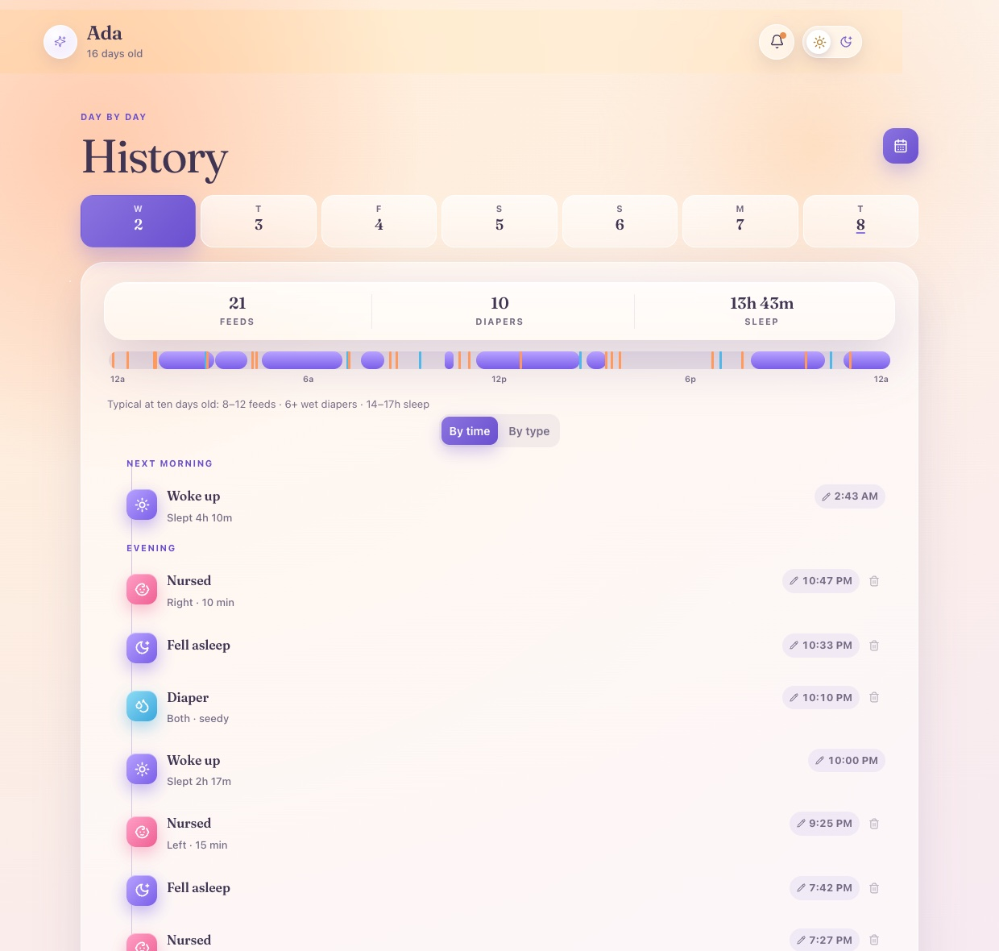

Production web app · Cloudflare
Family Ops Dashboard
A private household dashboard that two people depend on every day. Next.js 16 compiles to a single Cloudflare Worker, with D1 and Drizzle for data, R2 for media, and passkey authentication so there is no password to leak or reset. A companion Worker polls an Owlet sock on a Durable Object alarm loop and surfaces honest failure states instead of pretending the sensor is fine.
The discipline: 102 tests have to pass before any commit lands. This is the piece of my work that behaves most like real production software, because two people notice within minutes when it breaks.